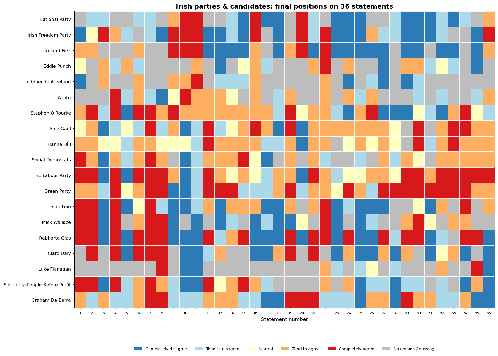
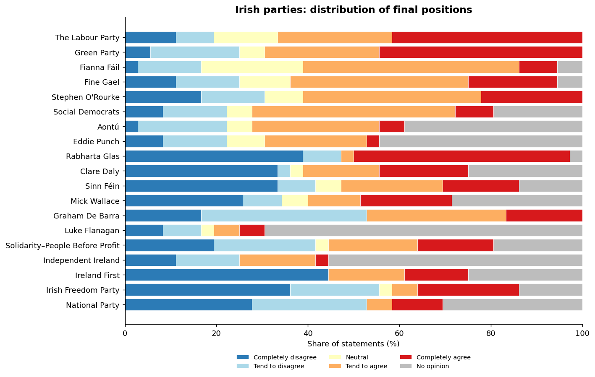
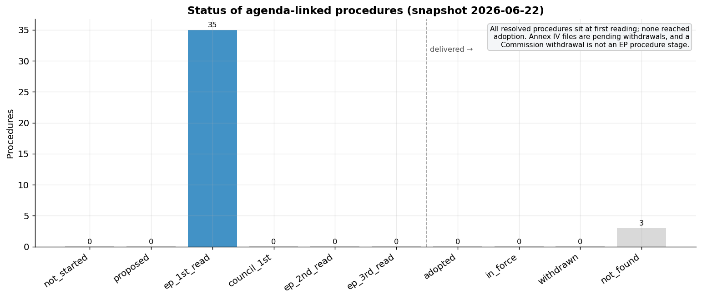

voteData = FileAttachment("assets/charts/vote_by_group.csv").csv({typed: true})
commitData = FileAttachment("assets/charts/commitments_by_commissioner.csv").csv({typed: true})
annexData = FileAttachment("assets/charts/wp_by_annex.csv").csv({typed: true})
timelineData = FileAttachment("assets/charts/timeline.csv").csv({typed: true})Data & Outputs
The EUR_DATA collection provides structured, analysis-ready datasets on European political institutions. Each dataset is released with reproducible pipeline code, a column-level codebook, and a test suite. All data is licensed CC-BY-4.0 (the euandi dataset additionally requires crediting its original authors; see that section).
Commission Formation (2024-2029)
The formation of the second von der Leyen Commission, from the June 2024 European Parliament elections to the adoption of the 2025 Commission Work Programme. Six interlinked tables, all keyed on a three-letter commissioner_id.
| Table | Rows | What it captures |
|---|---|---|
commissioners |
27 | The College: portfolio, party, gender, and DG assignments |
mission_letter_commitments |
1057 | Policy commitments from 26 presidential mission letters |
hearings |
26 | Confirmation hearing dates, committees, outcomes, and source URLs |
investiture_vote |
688 | MEP-level roll-call votes on the College (27 Nov 2024) |
work_programme_items |
130 | Items from four of the five annexes of the CWP 2025 |
formation_timeline |
13 | Key institutional milestones (250-day span) |
Notable fields: each commitment carries n_letters_sharing_text and is_boilerplate, flagging text repeated across mission letters (515 of the 1057 rows are boilerplate shared by multiple letters); each hearing row carries a source_url pointing to the EP hearing page.
Downloads: commissioners · commitments · hearings · investiture_vote · work_programme_items · formation_timeline
Every table is also available as XLSX in the same folder.
Documentation: Dataset README · Codebook
Source & attribution. Built from records of the European Parliament Open Data Portal and European Commission documents (mission letters, the Commission Work Programme 2025) via EUR-Lex, © European Union; reuse is permitted under Commission Decision 2011/833/EU.
Cite these datasets via the Zenodo concept DOI 10.5281/zenodo.21221494, which always resolves to the latest release. Each release also receives its own version DOI (v1.0.0: 10.5281/zenodo.21221495).
Explore the data
The charts below are interactive: hover for exact values.
Investiture vote by EP political group
The Parliament approved the College by 370 votes to 282, with 36 abstentions. The chart shows how each political group split.
Mission-letter commitments per commissioner
1057 commitments were extracted from the 26 mission letters: 440 high-confidence (from bullet-point lists) and 617 medium-confidence (from directive sentences and legislative references).
Commission Work Programme 2025 by annex
130 items extracted from four of the five annexes of the work programme adopted on 11 February 2025 (COM(2025) 45): 52 new initiatives (Annex I), 37 items from the annual plan on evaluations and fitness checks (Annex II), 37 withdrawals of pending proposals (Annex IV), and 4 envisaged repeals of acts in force (Annex V). The official Annex III (priority pending proposals) is deliberately not extracted here; those procedures are covered by the agenda implementation dataset’s term corpus below.
Formation timeline
From the European Parliament elections (6 June 2024) to the adoption of the Commission Work Programme (11 February 2025).
euandi 2024 (European Parliament election)
Voting Advice Application expert coding for the June 2024 European Parliament election: where Irish parties and candidates, and the EU-level party families, placed themselves on 36 policy statements. Two parallel datasets (ie_*, eu_*), final placement only.
| Table | Rows | What it captures |
|---|---|---|
ie_parties |
19 | Irish parties (13) + independent candidates (6) |
ie_statements |
36 | The policy-statement battery (Ireland wording) |
ie_positions |
684 | Each entity’s final position on each statement |
ie_salience |
57 | Each entity’s three most salient statements |
eu_parties |
10 | EU-level political party families |
eu_statements |
36 | The statement battery (EU wording) |
eu_positions |
360 | Each family’s final position on each statement |
eu_salience |
30 | Each family’s three most salient statements |
Downloads (Ireland): ie_parties · ie_statements · ie_positions · ie_salience · EU-level: eu_parties · eu_statements · eu_positions · eu_salience
Documentation: Dataset README · Codebook · Summary & figures
Source & attribution. Derived from the euandi 2024 Voting Advice Application coding (euandi 2024 team, European University Institute), published under CC BY 4.0 via EUI Cadmus. Redistributed under CC BY 4.0 with attribution to the original authors. The raw euandi source workbooks are not shipped with this repository; they can be obtained from the EUI Cadmus record above (the dataset README has details).
The position matrix below shows every Irish party and candidate (rows, ordered by similarity) against all 36 statements; the colour is the coded position.


Commission Agenda Implementation
How far has the Commission delivered the legislative agenda it set itself? Each planned agenda item is linked to its real legislative fate via the EP Open Data API and EUR-Lex, built as a time series (each status row is dated). This release ships Phase 1: the automated Annex IV procedure status and the term corpus; Annex I links and evaluation outcomes are scaffolded for manual curation.
| Table | Rows | What it captures |
|---|---|---|
agenda_items |
193 | The agenda spine: all 130 CWP items + 63 legislative commitments |
procedure_references |
38 | Procedure references parsed from the agenda |
procedure_status |
38 | Dated status snapshot per procedure (the core deliverable) |
term_legislative_output |
169 | Baseline corpus of all 2024-2026 term procedures |
evaluations |
37 | Annex II evaluation tracking (curated) |
By source scope, the 193 agenda items split into 52 CWP Annex I new initiatives, 37 Annex II evaluations and fitness checks, 37 Annex IV withdrawals of pending proposals, 4 Annex V envisaged repeals of acts in force, and 63 legislative mission-letter commitments.
Downloads: agenda_items · procedure_references · procedure_status · term_legislative_output · evaluations
Documentation: Dataset README · Codebook · Summary & figures
Source & attribution. Built from records of the European Parliament Open Data Portal and European Commission / EUR-Lex documents, © European Union; reuse is permitted under Commission Decision 2011/833/EU.
The status of the agenda-linked procedures, read against the full procedure ladder. As of the snapshot, all resolved procedures sit at first reading and none have been adopted: the Annex IV items are old proposals pending withdrawal, and a Commission withdrawal is not an EP procedure stage.

Generated from the dataset pipelines; figures are reproducible via each dataset’s make_summary.py. More datasets will be added as the project develops.